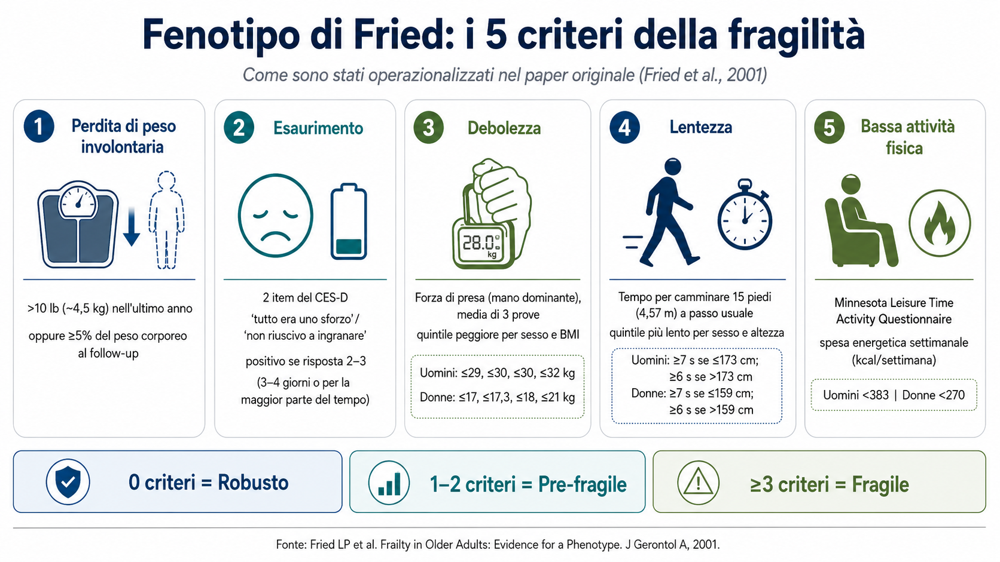
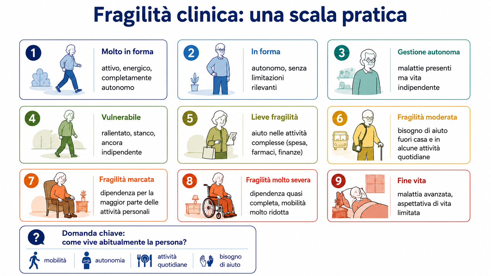
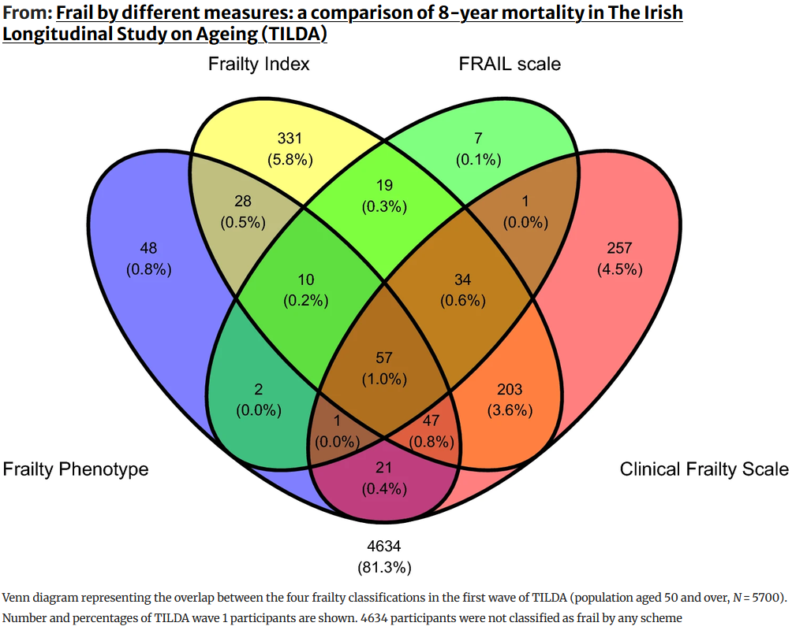

Invecchiamento e fragilità
Corso di geriatria - Educazione Professionale
Invecchiamento
Pensate a una persona anziana.
Pensate a una o due caratteristiche che la definiscono.
- A quale categoria appartengono queste caratteristiche?
- Corpo / fisico
- Cervello / cognizione
- Psiche / benessere mentale
- Socio-relazionale-economica
- Clinica / malattie
- Altro
Invecchiamento
L’età è solo una parte…
L’età cronologica rimane
- uno dei principali fattori di rischio non modificabili per malattia e morte
MA
- è uguale per tutti
- non differenzia i bisogni
Il modello
La lente utilizzata per guardare l’invecchiamento è il modello
bio-psico-sociale
Biologico
- Cellule, tessuti e organi cambiano con il tempo
- Il danno può accumularsi e favorire malattia
- La malattia può contribuire a perdita di funzione e disabilità
Psicologico
- L’invecchiamento modifica la percezione di sé e del mondo
- La percezione di sé e del mondo può modificare il modo di invecchiare
Sociale
- L’invecchiamento modifica famiglia, lavoro, relazioni e società
- Ambiente e società influenzano a loro volta il modo di invecchiare
Visione biologica
- Il tempo e il fumo danneggiano vie aeree e tessuto polmonare
- Si sviluppano infiammazione cronica, alterazione delle secrezioni e rimodellamento
- Il flusso dell’aria diventa progressivamente più ostacolato
- Si instaura la broncopneumopatia cronica ostruttiva (BPCO)
- Una persona con BPCO può avere dispnea e ridotta tolleranza allo sforzo
- Può inoltre sviluppare riacutizzazioni e complicanze respiratorie
Visione psicologica
- Una persona che cade può sviluppare paura di cadere
- Per paura di cadere si muove meno
- La minore attività favorisce perdita di forza
- Possono comparire riduzione del tono dell’umore e ritiro sociale
- La persona si muove ancora meno
- Il rischio di una nuova caduta aumenta
Visione sociale
- Una persona anziana vive al terzo piano senza ascensore
- Se cammina con difficoltà, uscire di casa diventa difficile
- Si riducono movimento, attività e relazioni
- Aumentano dipendenza e perdita di autonomia
- Le scale diventano un ostacolo sempre maggiore
Attività
Immagina una persona anziana con scompenso cardiaco.
Lo scompenso può causare mancafiato, stanchezza e ridotta tolleranza all’esercizio.
Fai emergere una piccola rete bio-psico-sociale
Identifica almeno:
- un elemento biologico
- un elemento psicologico
- un elemento sociale
Poi, in gruppo:
- collegate gli elementi con almeno due frecce
- per ogni freccia spiegate come un elemento può influenzare l’altro
- cercate almeno una relazione che torni indietro, creando un circolo
La fragilità
Osservazione empirica
Alcune persone hanno conseguenze molto più gravi di altre davanti allo stesso evento stressante.
La fragilità
Uno stesso stressor: un’infezione
Persona robusta
- Modesto impatto funzionale
- Buona tolleranza allo stressor
- Recupero relativamente rapido
- Ritorno alle attività abituali
Persona fragile
- Importante perdita funzionale
- Maggiore rischio di complicanze
- Possibile delirium o immobilità
- Recupero più lento o incompleto
La fragilità
Uno stato di aumentata vulnerabilità agli stressor, legato alla riduzione delle riserve e della capacità di mantenere o recuperare l’omeostasi
- Uno stressor può produrre conseguenze sproporzionate
- Il rischio di complicanze, eventi avversi e outcome negativi aumenta
I problemi
- Standardizzare la misura e la definizione nella pratica
- Evitare che la fragilità diventi un criterio automatico di esclusione
Standardizzare la misura
La fragilità descrive un rischio.
Come possiamo misurarla?
- Sono stati proposti numerosissimi strumenti
- Al di là dello strumento:
- è importante conoscere popolazione e validazione
- è importante soprattutto pensare alla fragilità
Frailty Index
Intuizione:
- considero numerosi problemi di salute (= deficit)
- attribuisco a ciascun deficit un valore tra 0 e 1
- sommo il danno accumulato
- standardizzo sul numero di deficit considerati
FI = deficit accumulati / deficit valutati
Fenotipo di fragilità
Modello teorico:
Quali sono le caratteristiche manifeste della fragilità?

Clinical Frailty Scale (CFS)
Applicazione pratica

Dicono la stessa cosa?

Attività
Considerate i tre strumenti per valutare la fragilità:
- FI — accumulo di deficit
- FP — cinque criteri fenotipici
- CFS — giudizio clinico gerarchico su funzione e dipendenza
In gruppo, ordinate i tre strumenti in base a:
- Facilità di utilizzo in una struttura residenziale
- Obiettività
- Facilità di comunicare il risultato al caregiver
Per ogni graduatoria, motivate almeno la prima e l’ultima posizione.
Escludere sulla base della fragilità
Molti strumenti di fragilità hanno dimostrato capacità prognostica.
Questo significa che:
- è importante riconoscere la fragilità, non soltanto scegliere una specifica scala
- una persona più fragile presenta mediamente un rischio maggiore di eventi avversi e morte
Predire il rischio non significa decidere automaticamente il trattamento.
Esempio
Una persona di 78 anni, CFS 7, ha una neoplasia.
È disponibile un trattamento oncologico con possibili benefici, ma anche con importanti effetti avversi.
L’oncologo decide di non proporlo sulla sola base della fragilità.
Qual è il problema di questo approccio?
La cura centrata sulla persona
Può essere condivisibile non iniziare uno specifico trattamento, ma rimangono molte possibilità:
- proporre un approccio simultaneo-palliativo
- proporre supporto psicologico
- educare sulla possibile evoluzione della malattia e sulle complicanze
- attivare servizi alla persona: SAD, ADI, IFeC, UCpDOM
- revisionare la terapia
- discutere priorità e obiettivi della persona
- …
Attività finale
Stessa età. Stessa malattia. Stessa persona?
Mario, 82 anni
Ha uno scompenso cardiaco.
- vive solo
- fa la spesa e cucina autonomamente
- esce ogni giorno
- gestisce farmaci e appuntamenti
- dopo un’infezione respiratoria torna rapidamente alle attività abituali
Giovanni, 82 anni
Ha uno scompenso cardiaco.
- vive con la moglie
- necessita di aiuto per spesa e farmaci
- esce raramente
- cammina lentamente e si affatica facilmente
- dopo un’infezione respiratoria perde autonomia per diverse settimane
Attività finale
In gruppo
- Che cosa rende diverse queste due persone?
- Chi vi sembra più fragile? Perché?
- Quali altre informazioni vorreste conoscere?
Fragilità come porta
La valutazione della fragilità diventa un modo per
identificare le persone anziane che più probabilmente hanno bisogni di salute complessi
Non serve a decidere chi curare.
alberto.zucchelli@unibs.it